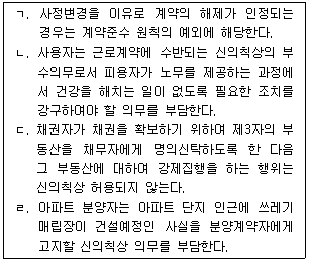
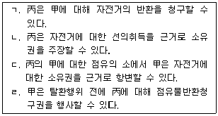
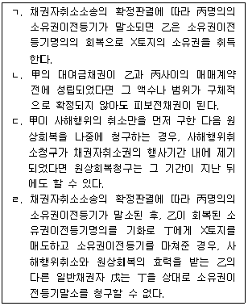
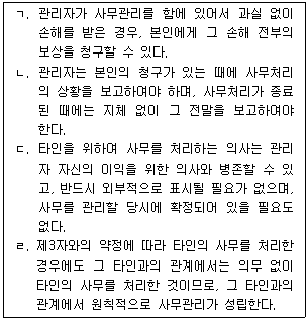

변리사-1차(2교시) (2019-02-16 기출문제)
1. 신의성실의 원칙에 관한 설명으로 옳은 것을 모두 고른 것은? (다툼이 있으면 판례에 따름)

- ㄱ
- ㄴ, ㄷ
- ㄷ, ㄹ
- ㄱ, ㄴ, ㄹ
- ㄱ, ㄴ, ㄷ, ㄹ
(정답률: 알수없음)

2. 17세인 甲은 乙소유의 자전거를 법정대리인의 동의를 얻지 않고 100만원에 구입하기로 乙과 매매계약을 체결하고, 다음 달 대금지급과 동시에 자전거를 건네받기로 하였다. 이에 관한 설명으로 옳지 않은 것은? (다툼이 있으면 판례에 따름)
- 甲의 법정대리인은 특별한 사정이 없는 한 매매계약을 취소할 수 있다.
- 甲은 법정대리인의 동의가 없었다는 이유로 자신이 체결한 매매계약을 원칙적으로 취소할 수 없다.
- 乙은 매매계약을 체결할 당시 甲이 17세라는 것을 알았던 경우에도 甲의 법정대리인에게 매매계약을 추인할 것인지 여부의 확답을 촉구할 수 있다.
- 甲이 매매계약에 대하여 법정대리인의 동의서를 위조하였고, 乙이 이를 믿고 계약을 체결한 경우, 甲의 법정대리인도 매매계약을 취소할 수 없다.
- 매매계약을 체결할 당시 甲이 17세라는 것을 乙이 알았던 경우, 乙은 매매계약과 관련한 자신의 의사표시를 철회할 수 없다.
(정답률: 알수없음)
3. 민법상 법인에 관한 설명으로 옳지 않은 것은? (다툼이 있으면 판례에 따름)
- 민법상 재단법인은 비영리법인이다.
- 사원자격의 득실에 관한 규정은 재단법인 정관의 필요적 기재사항에 해당한다.
- 해산한 법인은 청산의 목적범위 내에서만 권리가 있고 의무를 부담한다.
- 이사의 대표권에 대한 제한은 이를 등기하지 않으면, 제3자가 악의이더라도 대항하지 못한다.
- 청산종결의 등기가 마쳐졌더라도 청산사무가 종료되지 않은 경우에는 그 범위 내에서 청산법인으로서 존속한다.
(정답률: 알수없음)
4. 원물과 과실에 관한 설명으로 옳지 않은 것은?
- 소유권이전의 대가, 노동의 대가는 법정과실이다.
- 물건의 용법에 의하여 수취하는 산출물은 천연과실이다.
- 천연과실은 그 원물로부터 분리하는 때에 이를 수취할 권리자에게 속한다.
- 미분리의 과실은 독립한 물건이 아니지만, 명인방법을 갖춘 경우에는 타인 소유권의 객체가 될 수 있다.
- 법정과실은 수취할 권리의 존속기간일수의 비율로 취득할 수 있는 것이지만, 당사자가 그와 다르게 약정할 수도 있다.
(정답률: 알수없음)
5. 법률행위의 무효와 취소에 관한 설명으로 옳은 것은? (다툼이 있으면 판례에 따름)
- 착오가 의사표시자의 중대한 과실로 인한 경우에는 상대방이 그 착오를 알고 이를 이용하였더라도 의사표시자는 착오를 이유로 의사표시를 취소할 수 없다.
- 통정허위표시의 무효는 선의의 제3자에게 대항하지 못하며, 이때 제3자는 선의이면 족하고 무과실을 요하지 않는다.
- 무효인 가등기를 유효한 등기로 전용할 것을 약정하였다면, 무효행위의 전환이론에 따라 무효인 가등기는 그 등기시로 소급하여 유효로 전환된다.
- 취소권을 행사할 수 있는 기간의 경과 여부는 당사자가 주장하여야 하므로, 법원이 이를 당연히 조사하고 고려해야 할 사항은 아니다.
- 유동적 무효인 토지거래계약이 확정적으로 무효가 된 경우, 이에 대해 귀책사유가 있는 자는 계약의 무효를 주장할 수 없다.
(정답률: 알수없음)
6. 의사표시에 관한 설명으로 옳지 않은 것은? (다툼이 있으면 판례에 따름)
- 공무원 甲이 사직의 의사표시를 하는 것과 같은 사인의 공법행위에도 진의 아닌 의사표시에 관한 민법 규정이 적용된다.
- 甲이 상대방 乙에게 진의 아닌 의사표시의 무효를 주장하는 경우, 乙의 악의나 과실유무는 甲이 증명해야 한다.
- 채무자 甲의 법률행위가 통정허위표시로서 무효인 경우에도 그 법률행위가 채권자 취소권의 요건을 갖추었다면, 甲의 채권자 乙은 채권자취소권을 행사할 수 있다.
- 통정허위표시의 제3자가 악의라도 그 전득자가 통정허위표시에 대하여 선의인 때에는 전득자에게 허위표시의 무효를 주장할 수 없다.
- 의사표시의 상대방이 의사표시를 받은 때에 제한능력자인 경우에는 의사표시자는 원칙적으로 그 의사표시로써 대항할 수 없다.
(정답률: 알수없음)
7. 착오나 사기에 의한 의사표시에 관한 설명으로 옳은 것은? (다툼이 있으면 판례에 따름)
- 동기의 착오가 상대방에 의하여 제공되거나 유발된 경우에는 착오를 이유로 취소할 수 없다.
- 법률행위 내용의 중요부분에 대한 착오를 판단할 때, 의사표시자의 경제적인 불이익 여부는 문제되지 않는다.
- 착오를 이유로 한 취소권은 추인할 수 있는 날로부터 3년 내에, 법률행위를 한 날로부터 10년 내에 행사하여야 한다.
- 법률행위가 사기에 의한 것으로서 취소되는 경우, 그 법률행위가 동시에 불법행위를 구성하는 때에는 취소의 효과로 생기는 부당이득반환청구권과 불법행위로 인한 손해배상청구권을 중첩적으로 행사할 수 있다.
- 제3자의 사기로 인하여 계약을 체결한 경우, 그 제3자에 대하여 불법행위로 인한 손해배상을 청구하기 위해서는 먼저 그 계약을 취소해야 한다.
(정답률: 알수없음)
8. 제척기간에 관한 설명으로 옳은 것은? (다툼이 있으면 판례에 따름)
- 제척기간이 경과하면 그 기산일에 소급하여 권리소멸의 효과가 발생한다.
- 제척기간은 권리자의 청구나 압류 등이 있으면 중단되고 그때까지 경과된 기간은 산입되지 않는다.
- 점유보호청구권의 행사기간은 제척기간이기 때문에 점유보호청구권은 재판상ㆍ재판외에서 행사할 수 있다.
- 제척기간이 지난 후에는 당사자가 책임질 수 없는 사유로 그 기간을 준수하지 못하였더라도 추후에 보완될 수 없다.
- 채권양도의 통지는 그 양도인이 채권이 양도되었다는 사실을 채무자에게 알리는 행위이므로, 채권양도의 통지만으로 제척기간의 준수에 필요한 권리의 재판외 행사가 이루어졌다고 볼 수 있다.
(정답률: 알수없음)
9. 무권대리인 乙은 자신을 甲의 대리인이라고 하면서 丙과 매매계약을 체결하였다. 이에 관한 설명으로 옳지 않은 것은? (다툼이 있으면 판례에 따름)
- 乙이 무권대리인임을 알았던 丙은 甲에게 乙의 대리행위에 대한 추인 여부의 확답을 최고할 수 없다.
- 丙이 매매계약을 적법하게 철회하였다면 乙의 무권대리행위는 확정적으로 무효가 되어 그 후에는 甲이 매매계약을 추인할 수 없다.
- 甲이 乙에 대하여 매매계약에 관한 추인의 의사표시를 한 경우, 이러한 추인의 의사표시를 丙이 알지 못하였다면 丙은 철회할 수 있다.
- 丙이 매매계약을 철회하는 경우, 철회의 효과를 다투는 甲은 丙이 乙에게 대리권이 없다는 사실에 관하여 악의임을 증명할 책임이 있다.
- 乙이 甲을 단독상속한 경우, 乙은 甲의 지위에서 무권대리임을 이유로 매매계약의 무효를 주장하는 것은 허용되지 않는다.
(정답률: 알수없음)
10. 甲은 2017. 10. 1. 친구 乙에게 3,000만원을 대여하면서 이자는 월 1% , 변제기는 2018. 10. 1.로 정하였는데, 2019. 2. 16. 현재까지 乙은 원금과 이자를 전혀 변제하지 않고 있다. 이에 관한 설명으로 옳지 않은 것은? (다툼이 있으면 판례에 따름)
- 甲의 원금반환채권은 10년간 행사하지 아니하면 소멸시효가 완성한다.
- 甲이 乙을 사기죄로 고소하여 형사소송이 제기되었는데, 이 과정에서 배상명령을 신청하지 않은 경우에는 甲의 대여금채권의 소멸시효는 중단되지 않는다.
- 甲이 乙을 상대로 대여금반환청구의 소를 제기하였다가 이후 그 소를 취하한 경우에도 甲의 대여금반환청구의 소제기로 인한 시효중단의 효력은 유지된다.
- 乙의 재산에 대하여 甲의 가압류가 있는 경우에도 시효중단의 효력이 인정되지만, 당연무효의 가압류는 소멸시효의 중단사유에 해당하지 않는다.
- 甲이 乙에게 대여금반환채무의 이행을 최고한 경우, 최고 후 6개월 내에 재판상의 청구를 하였다면 최고시에 시효중단의 효력이 발생한다.
(정답률: 알수없음)
11. 乙은 甲의 대리인으로서 甲을 위하여 丙과 계약을 체결하였다. 이에 관한 설명으로 옳지 않은 것은? (다툼이 있으면 판례에 따름)
- 乙이 임의대리인이라면 乙은 행위능력자임을 요하지 않는다.
- 乙의 대리행위가 무권대리라는 이유로 甲이 무효를 주장하는 경우, 乙의 대리행위가 권한을 넘은 표현대리행위라는 주장 및 증명책임은 丙에게 있다.
- 매매계약의 체결에 관한 권한을 수여받은 乙이 甲을 대리하여 매매계약을 체결한 경우, 乙은 특별한 사정이 없는 한 甲을 대리하여 매매계약의 해제 등 일체의 처분권을 행사할 수 있다.
- 甲으로부터 아파트에 관한 일체의 관리권한을 위임받아 甲으로 가장하여 아파트를 丙에게 임대한 乙이 다시 甲으로 가장하여 임차인 丙에게 아파트를 매도하였다면, 권한을 넘은 표현대리의 법리를 유추적용할 수 있다.
- 대리권 수여행위는 묵시적인 의사표시로도 할 수 있으므로, 乙이 甲의 대리인의 외양을 가지고 행위하는 것을 甲이 알면서도 이의를 하지 않고 방임하는 등 사실상의 용태에 의하여 대리권의 수여가 추단되는 경우도 있다.
(정답률: 알수없음)
12. 조건과 기한에 관한 설명으로 옳지 않은 것은?
- 종기 있는 법률행위는 기한이 도래한 때로부터 그 효력을 잃는다.
- 기한의 이익은 이를 포기할 수 있지만, 상대방의 이익을 해하지 못한다.
- 조건이 법률행위 당시 이미 성취한 것인 경우에는 그 조건이 해제조건이면 그 법률행위는 조건 없는 법률행위로 한다.
- 조건 있는 법률행위의 당사자는 조건의 성부가 미정인 동안에 조건의 성취로 인하여 생길 상대방의 이익을 해하지 못한다.
- 조건의 성취로 인하여 불이익을 받을 당사자가 신의성실에 반하여 조건의 성취를 방해한 때에는 상대방은 그 조건이 성취한 것으로 주장할 수 있다.
(정답률: 알수없음)
13. 乙은 20⑤. 1. 10. 甲소유의 X토지를 매수하고 대금을 지급한 후 X토지를 인도 받았으나 소유권이전등기는 마치지 않았다. 乙은 2015. 12. 31. X토지를 다시 丙에게 매도하였고, 2019. 2. 16. 현재까지 丙역시 미등기 상태로 X토지를 점유하고 있다. 이에 관한 설명으로 옳지 않은 것은? (다툼이 있으면 판례에 따름)
- 甲은 丙에게 소유권에 기하여 X토지의 반환을 청구할 수 없다.
- 乙의 甲에 대한 소유권이전등기청구권의 소멸시효는 진행되지 않는다.
- 丙은 乙의 甲에 대한 소유권이전등기청구권을 대위하여 행사할 수 있다.
- 甲은 丙에 대해 불법점유를 이유로 임료 상당의 부당이득반환을 청구할 수 없다.
- X토지를 제3자가 불법점유하고 있다면, 丙은 제3자에 대하여 소유권에 기한 물권적 청구권을 행사할 수 있다.
(정답률: 알수없음)
14. 물권의 소멸에 관한 설명으로 옳지 않은 것은? (다툼이 있으면 판례에 따름)
- 점유권은 혼동이나 소멸시효에 의해 소멸하지 않는다.
- 소유권은 소멸시효에 의해 소멸하지 않지만, 타인이 시효취득하면 상대적으로 소멸할 수 있다.
- 전세권에 저당권이 설정된 경우, 전세목적물에 대한 소유권과 전세권이 동일인에게 귀속되더라도 전세권은 혼동에 의해 소멸하지 않는다.
- 후순위 저당권이 있는 부동산의 소유권을 선순위 저당권자가 아무런 조건 없이 증여 받아 취득한 경우, 혼동에 의해 저당권은 소멸한다.
- 부동산공유자의 공유지분포기의 의사표시가 다른 공유자에게 도달하더라도 그 공유지분이 바로 소멸하는 것은 아니고, 다른 공유자는 자신에게 귀속될 공유지분에 관하여 소유권이전등기를 청구할 수 있을 뿐이다.
(정답률: 알수없음)
15. 취득시효 중단에 관한 설명으로 옳지 않은 것은? (다툼이 있으면 판례에 따름)
- 취득시효기간 만료 전에 등기부상 소유명의가 변경된 사실은 취득시효의 중단사유가 될 수 없다.
- 취득시효의 중단사유인 재판상 청구에는 소유권 침해의 경우, 그 소유권을 기초로 하는 방해배제 및 손해배상 또는 부당이득반환청구소송도 포함된다.
- 취득시효를 주장하는 자가 소를 제기한 데 대하여 권리자가 피고로서 응소하고 그 소송에서 적극적으로 권리를 주장하여 그것이 받아들여진 경우에는 시효중단사유인 재판상 청구에 해당한다.
- 시효중단의 효력은 당사자 및 그 승계인에 미치므로, 그 중단효과가 발생한 후의 특정승계인 또는 포괄승계인은 중단 당시의 당사자의 점유기간을 승계하여 시효 취득을 주장할 수 없다.
- 소유권이전등기의 말소를 구하는 소를 제기하였다가 그 소를 취하한 후, 그로부터 6개월 내에 다시 취하된 소와 동일한 내용의 소를 제기한 경우, 후소가 제기된 때로부터 취득 시효의 진행이 중단된다.
(정답률: 알수없음)
16. 지상권에 관한 설명으로 옳은 것은? (다툼이 있으면 판례에 따름)
- 지상권은 1필 토지의 전부가 아닌 일부에 대해서는 성립할 수 없다.
- 지상권자는 존속기간이 만료한 때에 지상물이 현존하는 경우, 지상권설정자에 대해 선택적으로 지상권의 갱신청구 또는 지상물의 매수청구를 할 수 있다.
- 지상권은 지상물의 소유를 목적으로 토지를 사용하는 권리이므로, 지상권자는 지상권을 유보한 채 지상물 소유권만을 양도할 수 없다.
- 지상권의 지료지급 연체가 토지소유권의 양도 전후에 걸쳐 이루어진 경우, 토지양수인에 대한 연체기간이 2년 이상이면 토지양수인은 지상권의 소멸을 청구할 수 있다.
- 금융기관이 토지에 저당권과 함께 지료 없는 지상권을 설정받으면서 채무자의 사용 수익권을 배제하지 않은 경우, 금융기관은 그 토지의 무단점유자에 대해 지상권침해를 근거로 임료 상당의 손해배상을 청구할 수 있다.
(정답률: 알수없음)
17. 甲소유의 산악자전거를 乙이 훔쳐 보관하던 중, 선의이지만 과실이 있는 丙에게 팔고 인도하였다. 며칠 후 甲은 丙이 자신의 자전거를 가지고 있는 것을 발견하여 이를 자력으로써 탈환하였다. 이에 관한 설명으로 옳은 것을 모두 고른 것은? (다툼이 있으면 판례에 따름)

- ㄱ
- ㄱ, ㄴ
- ㄴ, ㄷ
- ㄱ, ㄴ, ㄹ
- ㄴ, ㄷ, ㄹ
(정답률: 알수없음)
18. 동산질권에 관한 설명으로 옳지 않은 것은? (다툼이 있으면 판례에 따름)
- 질물의 과실에 대해서도 질권의 효력이 미친다.
- 질권설정을 위한 인도는 현실의 인도에 한하지 않고 점유개정에 의하더라도 무방하다.
- 질권자가 질물을 점유하고 있더라도 피담보채권의 소멸시효 진행에 영향을 미치지 않는다.
- 건물의 임대인이 임대차에 관한 채권에 의하여 그 건물에 부속한 임차인 소유의 동산을 압류한 때에는 질권과 동일한 효력이 있다.
- 질권설정자에게 처분권한이 없더라도 채권자가 평온ㆍ공연하게 선의이며 과실 없이 질권설정을 받은 경우, 채권자는 동산질권을 선의취득한다.
(정답률: 알수없음)
19. 민사유치권에 관한 설명으로 옳은 것은? (다툼이 있으면 판례에 따름)
- 채권자가 채무자의 직접점유를 통하여 간접점유하는 경우에는 유치권은 성립하지 않는다.
- 유치권자는 채권의 변제를 받기 위하여 유치물을 경매할 수 있고, 매각대금에서 후순위 권리자보다 우선변제를 받을 수 있다.
- 수급인이 자신의 노력과 재료를 들여 신축한 건물에 대한 소유권을 원시취득한 경우, 수급인은 공사대금을 지급받을 때까지 유치권을 행사할 수 있다.
- 유치권의 피담보채권의 소멸시효기간이 확정판결 등에 의하여 10년으로 연장된 경우, 유치권이 성립된 부동산의 매수인은 종전의 단기소멸시효를 원용할 수 있다.
- 공사대금채권에 기하여 유치권을 행사하는 자가 스스로 보존에 필요한 범위 내에서 유치물인 주택에 거주하며 사용하는 경우에도 소유자는 유치권의 소멸을 청구할 수 있다.
(정답률: 알수없음)
20. 甲은 乙소유의 X주택 일부(A부분)에 전세금 1억원, 존속기간 2년으로 하는 전세계약을 체결하고 전세권설정등기를 마쳤다. 이에 관한 설명으로 옳은 것은? (다툼이 있으면 판례에 따름)
- 甲은 전세권 존속 중에는 장래에 그 전세권이 소멸하는 경우에 전세금반환채권이 발생하는 것을 조건으로 그 장래의 조건부 채권을 양도할 수 없다.
- 乙이 甲에게 전세금의 반환을 지체한 경우, 甲은 X주택의 A부분이 아니라 전부에 대하여 경매를 청구할 수 있다.
- 경매절차에서 X주택이 매각된 경우, 甲은 X주택의 전부에 대하여 후순위권리자보다 전세금을 우선 변제받을 수 없다.
- 甲의 채권자 丙이 甲의 전세권에 저당권을 취득한 경우, 전세권의 존속기간이 만료되더라도 丙은 전세권 자체에 대하여 저당권을 실행할 수 있다.
- 甲의 전세권이 존속하는 동안에 乙이 X주택을 丁에게 매도하고 丁명의로 소유권이전 등기를 마쳐준 경우, 乙은 전세금반환의무를 면하게 된다.
(정답률: 알수없음)
21. 甲은 乙에 대한 1억원의 채권을 담보하기 위해 乙소유의 X주택에 저당권설정등기를 마쳤다. 그 후 丙은 2017. 10. 1. X주택을 보증금 2억원에 임차하여 인도받고, 전입신고를 마친 후 2019. 2. 16. 현재까지 살고 있다. 2018. 1. 10. 丁이 乙에 대한 8,000만원의 채권으로 X주택을 가압류하였고, 2018. 4. 10. 戊는 乙에 대한 1억원의 채권을 담보하기 위해 X주택에 저당권설정등기를 마쳤다. 2019. 2. 16. X주택은 戊의 저당권실행을 위한 경매로 A에게 매각되었으며, 배당할 금액은 2억 5,000만원이다. 이에 관한 설명으로 옳은 것은? (다툼이 있으면 판례에 따름)
- A는 임대인 乙의 지위를 승계한 것으로 본다.
- 저당권자는 가압류채권자에 우선하므로, 戊는 丁에 우선하여 변제받을 수 있다.
- 경매로 인해 丙의 임차권은 소멸하기 때문에 丙은 A에게 주택을 인도하여야 한다.
- 丙이 임대차계약서상에 확정일자를 받았다면, 丙은 甲에 우선하여 보증금 전액에 대해 우선변제를 받을 수 있다.
- 丙이 적법하게 배당요구를 하였다면 배당받을 수 있었던 금액이 丙의 적법한 배당요구가 없어서 丁과 戊에게 배당된 경우, 丙은 丁과 戊에게 부당이득반환을 청구할 수 있다.
(정답률: 알수없음)
22. 甲은 乙에 대한 1억원의 대여금채권을 담보하기 위해 乙소유의 부동산(가액 3억원)에 가등기를 마쳤고, 그 후 丙이 그 부동산에 저당권설정등기를 마쳤다. 이에 관한 설명으로 옳은 것은? (다툼이 있으면 판례에 따름)
- 甲이 담보권실행을 통지할 때에 청산금이 없더라도 2개월의 청산기간이 지나기 전에는 가등기에 기한 본등기를 청구할 수 없다.
- 甲이 담보권실행을 통하여 우선변제 받게 되는 이자나 지연배상금 등 피담보채권의 범위는 청산금 지급 당시를 기준으로 확정된다.
- 甲이 담보권실행을 통지하고 2개월의 청산기간이 지난 경우, 청산금의 지급이 없더라도 乙은 대여금을 변제하고 가등기말소를 청구할 수는 없다.
- 甲이 주관적으로 평가한 청산금의 액수가 정당하게 평가된 청산금의 액수에 미치지 못하면 담보권실행 통지는 효력이 없다.
- 甲이 담보권실행을 위해 통지하여야 할 청산금의 평가액은 통지 당시의 목적부동산 가액에서 그 당시의 목적부동산에 존재하는 모든 피담보채권액을 공제한 차액이다.
(정답률: 알수없음)
23. 채권자 甲이 채무자 乙에 대한 1억원의 채권을 담보하기 위해 물상보증인 丙소유의 X부동산(가액 1억 2,000만원), 丁소유의 Y부동산(가액 8,000만원)에 각각 1번 저당권을 취득하고, A가 8,000만원의 채권으로 X부동산에, B가 6,000만원의 채권으로 Y부동산에 각각 2번 저당권을 취득하였다. 甲이 X부동산에 대하여 먼저 담보권실행을 위한 경매를 하여 매각대금 1억 2,000만원이 배당순위에 따라 甲과 A에게 배당되었다. 이 경우 A가 Y부동산의 매각대금(8,000만원)에서 배당받을 수 있는 금액은? (단, 실행비용ㆍ이자 등은 고려하지 않고, 다툼이 있으면 판례에 따름)
- 0원
- 2,000만원
- 4,000만원
- 6,000만원
- 8,000만원
(정답률: 알수없음)
24. 채권질권에 관한 설명으로 옳지 않은 것은? (다툼이 있으면 판례에 따름)
- 질권의 목적인 채권의 양도행위에는 질권자의 동의가 필요하다.
- 채권의 목적물이 금전인 때에는 질권자는 자기 채권의 한도에서 직접 청구할 수 있다.
- 채권질권의 효력은 질권의 목적이 된 채권의 지연손해금 등과 같은 부대채권에도 미친다.
- 저당권으로 담보한 채권을 질권의 목적으로 한 때에는 그 저당권등기에 질권의 부기 등기를 하여야 그 효력이 저당권에 미친다.
- 제3채무자가 질권설정 사실을 승낙한 후 질권설정계약이 합의해지된 경우, 질권설정자가 해지를 이유로 제3채무자에게 원래의 채권으로 대항하려면 질권자가 제3채무자에게 해지 사실을 통지하여야 한다.
(정답률: 알수없음)
25. 甲은 乙에 대한 대여금채무 6억원을 담보하기 위하여 자기 소유 X토지에 乙명의의 저당권을 설정해주었다. 甲의 부탁으로 위 채무를 담보하기 위하여 丙은 乙과 보증계약을 체결하였고, 丁과 戊는 각각 자기 소유 Y토지와 Z토지에 乙명의의 저당권을 설정해주었다. 이에 관한 설명으로 옳지 않은 것은? (단, 이자 및 지연배상금은 고려하지 않고, 다툼이 있으면 판례에 따름)
- 丁이 甲의 대여금채무를 모두 변제한 경우, 丁은 甲에 대하여 구상권을 행사할 수 있다.
- 丁이 甲의 대여금채무를 모두 변제한 경우, 丁은 乙을 대위하여 丙을 상대로 2억원의 지급을 청구할 수 있다.
- 戊는 甲의 대여금채무를 변제할 정당한 이익이 있는 자이므로, 戊가 그 채무를 모두 변제하였다면 乙의 승낙이 없어도 당연히 乙을 대위한다.
- 丙이 甲의 대여금채무를 모두 변제한 경우, 미리 저당권등기에 대위의 부기등기를 하지 않더라도 丁에 대하여 乙을 대위할 수 있다.
- A가 甲과의 매매계약을 원인으로 X토지의 소유권이전등기를 마친 후 甲의 대여금 채무를 모두 변제한 경우, A는 丙에 대하여 乙을 대위할 수 있다.
(정답률: 알수없음)
26. 보증계약에 관한 설명으로 옳지 않은 것은?
- 보증인은 보증채무에 대하여 위약금 또는 손해배상액을 예정할 수 있다.
- 채무자가 보증인을 세울 의무가 있는 경우, 채권자가 보증인을 지명하였다면 보증인은 행위능력 및 변제자력이 없어도 된다.
- 주채무자의 의사에 반하여 보증인이 된 자가 과실 없이 변제 기타 자기의 출재로 주채무를 소멸시킨 경우, 주채무자는 현존 이익의 한도에서 배상하여야 한다.
- 채권자가 연대보증인에게 채무이행을 청구한 경우, 연대보증인은 채무자의 변제자력이 있는 사실 및 그 집행이 용이할 것을 증명하여 먼저 채무자에게 청구할 것과 그 재산에 대하여 집행할 것을 항변할 수 있다.
- 주채무자의 부탁으로 보증인이 된 자가 과실 없이 변제 기타의 출재로 주채무를 소멸시킨 경우, 보증인은 주채무자를 상대로 면책된 날 이후의 법정이자에 관하여 구상청구를 할 수 있다.
(정답률: 알수없음)
27. 채무불이행으로 인한 손해배상책임에 관한 설명으로 옳지 않은 것은? (다툼이 있으면 판례에 따름)
- 손해배상 방법으로서 금전배상의 경우, 금전은 우리나라 통화를 의미하지만, 당사자의 약정이 있으면 외국통화로 배상할 수 있다.
- 채무불이행으로 인한 손해배상책임과 달리 매매계약의 해제로 인한 원상회복의무의 이행으로서 이미 지급한 매매대금 기타 급부의 반환을 구하는 경우에는 과실상계의 법리가 적용되지 않는다.
- 지체상금이 손해배상의 예정으로 인정되어 감액할 때, 채무자가 계약을 위반한 경위 등 제반사정이 참작되므로, 손해배상액의 감경에 앞서 채권자의 과실 등을 들어 따로 감경할 필요는 없다.
- 특별손해의 배상에서 채무자가 그 사정을 알았거나 알 수 있었는지의 여부는 채무의 이행기가 아니라 계약체결 당시를 기준으로 판단하여야 한다.
- 매도인이 매수인으로부터 부동산 매매대금을 약정기일에 지급받지 못한 결과 제3자로 부터 이와 유사한 부동산을 매수하고 그 잔대금을 지급하지 못하여 계약금이 몰수되는 손해를 입었다면, 이는 특별한 사정으로 인한 손해에 해당한다.
(정답률: 알수없음)
28. 甲이 乙에 대한 대여금채권을 丙에게 양도하였고 乙이 이를 승낙하여 그 의사표시가 丙에게 도달되었다. 이에 관한 설명으로 옳지 않은 것은? (다툼이 있으면 판례에 따름)
- 乙의 승낙에는 조건을 붙일 수 있다.
- 乙이 이의 없이 승낙을 하더라도 특별한 사정이 없는 한 乙에게는 甲의 대여금채권의 성립이나 소멸에 영향을 미치는 사정을 丙에게 알려야 할 주의의무가 없다.
- 丙이 甲의 대여금채권에 양도금지특약이 있다는 사실을 알았더라도 그 후 乙이 승낙하였다면, 채권양도는 다른 약정이 없는 한 그 성립 당시로 소급하여 유효하게 된다.
- 乙이 이의 없이 승낙을 하였더라도 그 때까지 발생한 乙의 甲에 대한 항변사유를 丙이 중대한 과실로 알지 못하였다면, 乙은 甲에 대한 그 항변사유로 丙에게 대항할 수 있다.
- 甲의 대여금채권에 관하여 보증인 丁이 있는 경우, 다른 약정이 없는 한 丁에 대한 보증채권의 양도에 관하여 별도의 대항요건을 갖추지 않더라도 甲의 대여금채권과 함께 丁에 대한 보증채권 역시 丙에게 이전된다.
(정답률: 알수없음)
29. 甲이 乙에 대한 A채권을 보전하기 위하여 丙을 상대로 채권자대위소송을 제기하는 경우, A채권에 관한 설명으로 옳지 않은 것은? (다툼이 있으면 판례에 따름)
- A채권의 존재뿐만 아니라 그 발생원인도 甲이 증명할 책임이 있다.
- A채권은 丙에게 대항할 수 있는 권리가 아니어도 된다.
- 토지거래허가신청절차의 협력의무이행청구권도 A채권이 될 수 있다.
- 丙은 특별한 사정이 없는 한 甲에 대하여 A채권의 소멸시효가 완성되었음을 항변할 수 없다.
- 丙은 甲에 대하여 A채권의 발생원인이 된 법률행위가 무효라는 사실을 주장하여 A채권의 인정 여부를 다툴 수 있다.
(정답률: 알수없음)
30. 乙이 유일하게 소유하고 있는 X토지를 丙에게 매도한 후 소유권이전등기를 마쳐 주었고, 甲은 乙에 대한 대여금채권을 보전하기 위하여 丙을 상대로 채권자취소 소송을 제기하여 승소하였다. 이에 관한 설명으로 옳은 것을 모두 고른 것은? (다툼이 있으면 판례에 따름)

- ㄱ, ㄷ
- ㄴ, ㄷ
- ㄷ, ㄹ
- ㄱ, ㄴ, ㄹ
- ㄴ, ㄷ, ㄹ
(정답률: 알수없음)
31. 이행불능에 관한 설명으로 옳지 않은 것은? (다툼이 있으면 판례에 따름)
- 증여계약의 대상인 권리가 타인에게 귀속되어 있다는 이유만으로 증여자의 계약에 따른 이행이 불능이라고 할 수는 없다.
- 매매목적물인 부동산이 가압류되었다는 사유만으로 매도인의 이행불능을 이유로 매매계약을 해제할 수는 없다.
- 부동산의 소유권이전등기의무자가 그 부동산에 제3자 명의로 가등기를 마쳐주면, 부동산의 처분권한 상실로 소유권이전등기의무가 이행불능이 된다.
- 매수인의 잔대금지급의무가 소유권이전등기의무와 동시이행관계에 있더라도, 소유권이전등기의무의 이행불능을 이유로 매수인이 매매계약을 해제하기 위해서는 매수인이 대금지급의무의 이행제공을 할 필요가 없다.
- 임대인에게 임대목적물에 대한 소유권이 없는 경우, 임차인이 진실한 소유자로부터 목적물의 반환청구를 받는 등의 이유로 임차인이 이를 사용ㆍ수익할 수가 없게 되면 임대인의 채무는 이행불능이 된다.
(정답률: 알수없음)
32. 채무인수에 관한 설명으로 옳지 않은 것은? (다툼이 있으면 판례에 따름)
- 중첩적 채무인수는 채권자와 인수인 사이의 합의가 있으면 채무자의 의사에 반해서도 할 수 있다.
- 면책적 채무인수가 있는 경우, 인수채무의 소멸시효기간은 채무인수에 따라 중단되고 채무인수일로부터 새로이 진행한다.
- 채권자의 승낙에 의하여 채무인수의 효력이 생기는 경우, 채권자가 승낙을 거절하면 그 이후에는 채권자가 다시 승낙하여도 채무인수로서의 효력이 생기지 않는다.
- 면책적 채무인수에 대한 채권자의 승낙은 묵시적으로도 가능하며, 채권자가 승낙을 하지 않는 대신 직접 인수인을 상대로 인수채무의 이행을 청구하는 것도 묵시적 승낙에 해당한다.
- 매수인이 매매목적물에 관한 임대차보증금반환채무를 인수하면서 그 채무액을 매매대금에서 공제하기로 약정한 경우, 임차인의 승낙이 없으면 병존적 채무인수로 본다.
(정답률: 알수없음)
33. 해약금 규정(민법 제565조)에 의하여 계약을 해제하는 경우에 관한 설명으로 옳지 않은 것은? (다툼이 있으면 판례에 따름)
- 계약금의 일부만 지급된 경우, 수령자는 실제 지급된 계약금이 아니라 약정계약금의 배액을 상환하고 계약을 해제할 수 있다.
- 계약당사자 일방이 채무의 이행기 전에 이미 채무의 이행에 착수하였다면 특별한 사정이 없는 한 계약당사자는 해제권을 행사할 수 없다.
- 계약당사자가 계약금에 기한 해제권을 배제하기로 하는 약정을 하였다면, 각 당사자는 해제권을 행사할 수 없다.
- 계약금을 수령한 매도인이 매수인에 대하여 해제권을 행사하기 위해서는 수령한 계약금의 배액의 이행제공을 하여야 하며 매수인이 수령을 거부하는 경우, 이를 공탁하여야 한다.
- 토지거래허가구역 내의 토지에 관한 매매계약의 당사자가 토지거래허가신청절차의 협력의무를 이행하여 관할관청으로부터 거래허가를 받았더라도, 그러한 사정만으로는 아직 이행의 착수가 있다고 볼 수 없다.
(정답률: 알수없음)
34. 甲은 2018. 9. 10. 乙에게 자신이 사용하던 X컴퓨터를 50만원에 매각하겠다는 의사표시와 2018. 9. 25.까지 구매여부를 알려 달라는 내용의 편지를 발송하였고, 그 편지는 2018. 9. 13. 乙에게 도달하였다. 이에 乙이 2018. 9. 17. X컴퓨터를 50만원에 매수하겠다는 승낙의 편지를 甲에게 발송하였다. 이에 관한 설명으로 옳은 것은?
- 甲은 乙이 발송한 편지를 2018. 9. 19. 받았는데, 甲이 2018. 9. 24. 개봉하여 읽었다면 매매계약은 2018. 9. 24. 성립한다.
- 乙이 승낙의 의사표시를 하였으므로, 乙이 발송한 편지를 甲이 2018. 9. 25.까지 받지 못하였더라도 매매계약은 성립한다.
- 甲은 乙이 발송한 편지를 2018. 9. 20. 받았다면, 매매계약은 그 때부터 성립하고 효력이 발생한다.
- 乙이 발송한 편지가 2018. 9. 26. 甲에게 도달하였고 甲이 2018. 9. 27. 연착의 통지를 한 경우, 매매계약은 성립하지 않는다.
- 乙이 2018. 9. 17. 매수하겠다는 편지를 발송하기 전까지 특별한 사정이 없는 한 甲은 乙에 대하여 매각의 의사표시를 철회할 수 있다.
(정답률: 알수없음)
35. 동시이행의 항변권에 관한 설명으로 옳은 것은? (다툼이 있으면 판례에 따름)
- 근저당권 실행을 위한 경매가 무효로 된 경우, 매수인의 채무자에 대한 소유권이전등기 말소의무와 근저당권자의 매수인에 대한 배당금반환의무는 동시이행관계에 있다.
- 동시이행관계에 있는 쌍방의 채무 중 어느 한 채무가 이행불능이 됨으로 인하여 발생한 손해배상채무는 다른 채무와 동시이행관계에 있지 않다.
- 가압류등기가 있는 부동산 매매계약의 경우, 특별한 사정이 없는 한 매도인의 가압류 등기의 말소의무는 매수인의 대금지급의무와 동시이행관계에 있지 않다.
- 쌍방의 채무가 동시이행관계에 있는 경우, 상대방 채무의 이행제공이 없더라도 채무자가 이행기에 채무를 이행하지 않으면 이행지체의 책임을 진다.
- 부동산 매매계약에서 매수인이 부가가치세를 부담하기로 약정한 경우, 특별한 사정이 없는 한 부가가치세를 포함한 매매대금 전부와 부동산 소유권이전등기의무가 동시이행관계에 있다.
(정답률: 알수없음)
36. 계약의 합의해제 등에 관한 설명으로 옳지 않은 것은? (다툼이 있으면 판례에 따름)
- 계약이 합의해제된 경우, 특별한 사정이 없는 한 채무불이행으로 인한 손해배상청구는 할 수 없다.
- 매도인이 매수인에게 매매계약의 합의해제를 청약하였더라도 매수인이 그 청약에 대하여 조건을 붙여 승낙한 경우, 매도인의 청약은 실효된다.
- 계약이 일부이행된 경우, 그 원상회복에 관하여 의사가 일치되지 않아도 계약의 묵시적 합의해제가 인정될 수 있다.
- 매매계약을 합의해제한 후 그 합의해제를 무효화시키고, 해제된 매매계약을 부활시키는 약정은 적어도 당사자 사이에서는 가능하다.
- 당사자 사이에 약정이 없는 이상 합의해지로 인하여 반환할 금전에 그 받은 날로부터 이자를 붙여서 반환할 의무는 없다.
(정답률: 알수없음)
37. 乙은 건물의 소유를 목적으로 甲소유의 X토지를 임차한 후, 甲의 동의 없이 이를 丙에게 전대하였다. 이에 관한 설명으로 옳은 것은? (다툼이 있으면 판례에 따름)
- 甲은 丙에게 X토지의 반환을 청구할 수 없다.
- 甲은 乙에 대한 임대차계약상의 차임청구권을 상실한다.
- 甲과 乙사이의 임대차계약은 무단전대를 이유로 甲의 해지의 의사표시가 없더라도 해지의 효력이 발생한다.
- 임대차 및 전대차기간 만료시에 丙이 신축한 건물이 X토지에 현존하고 甲이 임대차계약의 갱신을 거절한 경우, 丙은 甲에게 건물매수를 청구할 수 없다.
- 甲과 乙사이의 임대차계약이 존속하더라도 甲은 X토지의 불법점유를 이유로 丙에게 차임상당의 부당이득반환을 청구할 수 있다.
(정답률: 알수없음)
38. 사무관리에 관한 설명으로 옳은 것을 모두 고른 것은? (다툼이 있으면 판례에 따름)

- ㄱ, ㄴ
- ㄴ, ㄷ
- ㄷ, ㄹ
- ㄱ, ㄴ, ㄹ
- ㄱ, ㄷ, ㄹ
(정답률: 알수없음)
39. 민법상 조합에 관한 설명으로 옳은 것은?
- 조합원은 정당한 사유가 있는 경우에 한하여 조합의 업무 및 재산상태를 검사할 수 있다.
- 조합의 존속기간을 정한 때에도 조합원은 부득이한 사유가 있으면 탈퇴할 수 있다.
- 조합원의 제명은 정당한 사유가 있는 때에 한하여 다른 조합원 3분의 2 이상의 찬성으로 결정된다.
- 조합의 채무자는 그 채무와 조합원에 대하여 개인적으로 가지는 채권과 상계할 수 있다.
- 조합원의 제명 결정은 제명된 조합원에게 통지하지 않아도 그 조합원에게 대항할 수 있다.
(정답률: 알수없음)
40. 공동불법행위에 관한 설명으로 옳지 않은 것은? (다툼이 있으면 판례에 따름)
- 수인이 공동의 불법행위로 타인에게 손해를 가한 때에는 연대하여 그 손해를 배상할 책임이 있다.
- 공동불법행위가 성립하기 위해서는 행위자 사이에 의사의 공통이나 행위공동의 인식은 필요하지 않다.
- 공동불법행위자 중 1인의 변제는 변제된 금액의 한도 내에서 다른 공동불법행위자를 위하여 공동면책의 효력이 있다.
- 가해자불명의 공동불법행위의 경우, 개별 행위자가 자기의 행위와 손해발생 사이에 인과관계가 없음을 증명하면 불법행위책임을 면한다.
- 공동불법행위자 중 1인인 甲의 손해배상채무가 시효로 소멸한 후에, 다른 공동불법행위자 乙이 피해자에게 자기의 부담부분을 넘는 손해를 배상하였더라도 乙은 甲에게 구상권을 행사할 수 없다.
(정답률: 알수없음)